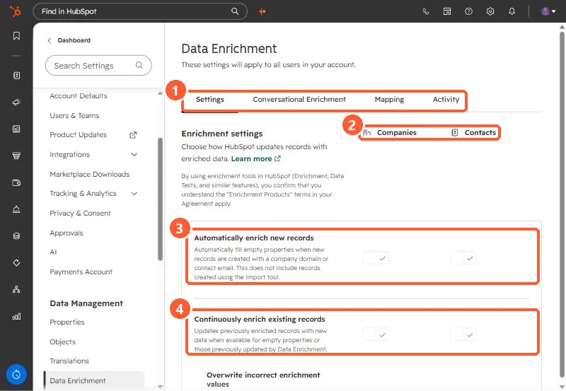

Short answer
In Settings, Data Enrichment, separate toggles for companies and contacts control Automatically enrich new records (fills empty properties when a record is created with a domain or email, not including imports), Continuously enrich existing records, Overwrite incorrect enrichment values, enriching recently engaged contacts, and opting out of free company name enrichment. HubSpot says automatic enrichment is off by default and does not overwrite values set by a user or another system. My demo has both automatic settings on.
1. The settings page
Open Data Enrichment. The page says these settings apply to all users. Tabs: Settings, Conversational Enrichment, Mapping, and Activity.


2. What each setting does
- Automatically enrich new records: fills empty properties when a record is created with a company domain or contact email. It does not include records created with the import tool.
- Continuously enrich existing records: updates previously enriched records when new data is available. HubSpot says if a user or system edits an enriched value, continuous enrichment stops enriching that property.
- Overwrite incorrect enrichment values: removes enriched values HubSpot has decided are wrong. Values set manually, by workflows, or by integrations are not overwritten.
- Automatically enrich recently engaged contacts: triggers when Last engagement date changes.
- Opt out of free company name enrichment: stops HubSpot setting Company Name on new companies.
3. Things to know
- HubSpot says automatic enrichment is off by default and needs to be turned on for contacts and companies separately.
- The page notes that using enrichment tools means the Enrichment Products terms in your agreement apply.
- The Activity tab is the place to answer "who changed this field".